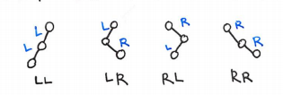
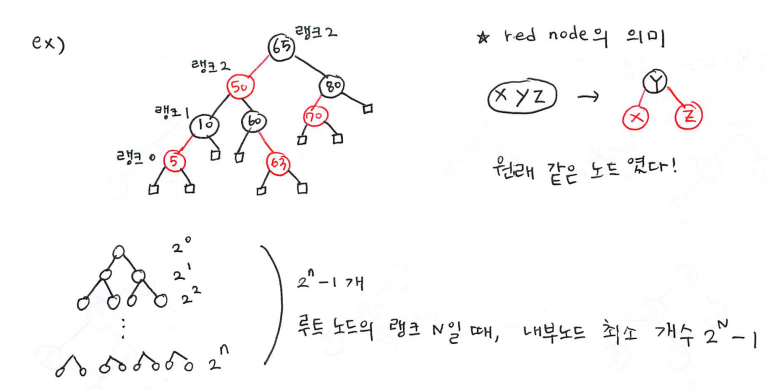
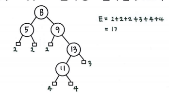
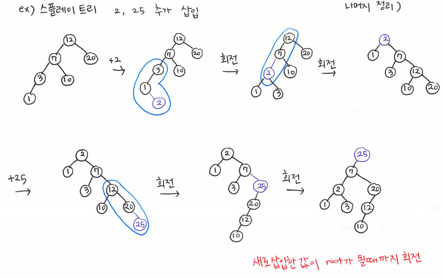

1.4.2
이진탐색트리 (binary search tree)의 응용
- └이진 탐색 트리, AVL 트리, 레드-블랙 트리, 스플레이 트리, 최적이진탐색 트리
#이진탐색트리 (binary search tree)
- 정의
- root를 기준으로 왼쪽 값은 root보다 작고, 오른쪽 값은 root보다 큰 트리
- data의 값은 반드시 unique 해야함 (중복 데이터 X)
- 서브 트리들도 이진탐색트리의 성질을 유지해야함
- 주의) 완전 이진 트리 X. 그냥 막 생겨도 이진 탐색 트리임
- 연산
- 탐색
- 1. 순환적 탐색: 자기 자신을 재호출해 O(h) 안에 수행 가능
- 2. 반복적 탐색: while문 이용, O(h) 안에 수행 가능
- 삽입
- 1. 현재 subtree의 root의 data와 삽입하려는 data를 비교
- 2. root data = 삽입 data 이면, 삽입 불가 (중복 data 불가능)
- 3. if ( root data ≠ 삽입 data && root data > 삽입 data )
- 왼쪽 서브트리로 넘어가 검사 ( 더 이상 검사할 노드가 없다면, 그곳이 바로 삽입 위치)
- 4. if ( root data ≠ 삽입 data && root data < 삽입 data )
- 오른쪽 서브트리로 넘어가 검사 ( 더 이상 검사할 노드가 없다면, 그곳이 바로 삽입 위치)
- 삭제
- if 삭제하려는 노드 = 단말 노드 → 해당 노드만 삭제
- if 삭제하려는 노드 = 자식으로 1개의 서브트리만 가짐 → 해당 노드 삭제, 서브트리는 자기 부모 노드에게 붙여 줌
- if 삭제하려는 노드 = 자식으로 2개의 서브트리 가짐 → 해당 노드 삭제, 2개의 서브트리를 하나로 합쳐 부모 노드에게 붙여 준다
- 이때 합친 서브트리의 root 노드는 왼쪽 서브트리에서 가장 큰 키값을 가지는 노드 or 오른쪽 서브트리에서 가장 작은 키값을 가지는 노드

- 이진탐색트리 성능 분석
- 트리 모양따라 성능차가 심하다 (완전 이진 트리에 가까울수록 성능이 좋다)
| Best | O(log2 n) | 완전 이진 트리 |
| Worst | O(n) | 사향 트리 |
| Average | O(log2 n) | |
- 장점: 탐색 쉽다
- 단점: worst case일 때 성능이 안 좋다
이진탐색트리 (binary search tree)의 응용
- 이진탐색트리 개선

- AVL 트리
- 이진 탐색 트리 + 균형 개선
- 이진 탐색 트리 성질 모두 가짐 (여전히 중복 데이터 X)
- 균형을 위해 좌우 높이 1 이상 차이 X
- 균형 인수 BF (Balance Factor = | HL- HR | ≤ 1 ( -1, 0, 1 값 가짐)
- 트리 높이 불균형이 발생한다면, 회전시킨다

- AVL 트리 삽입
- 1. 평범한 이진 탐색 트리처럼 삽입한다
- 2. 새로 삽입한 위치부터 root까지 BF 값을 갱신한다 (밑에서 위로)
- 3. 위배되는 BF를 회전시킨다
- 4. 회전 후 BF 값 갱신한다
* 회전 수행할 노드: 균형 인수가 -2 or 2이고, 새로 삽입된 노드에 가장 가까운 조상노드부터 새로 삽입한 노드 위치 사이의 3개의 노드 (새 노드에서 타고 위로 올라가다가, 처음으로 -2나 2 마주치면 그 아래로 왔던 경로대로 회전 수행함)
- 레드블랙 트리
- 이진 탐색 트리 + 완전 균형 (확장 이진 트리) + red/black 색 = 확장 이진 탐색 트리
- 확장 이진 트리: 외부노드가 추가된 이진 트리. 외부노드 꼭 그려야함
- 규칙
- 1. Root와 외부노드는 무조건 black
- 2. 연속 2개 red 불가능 (black끼리는 연속 가능)
- 3. root에서 외부 노드까지의 모든 경로는, black 노드의 수 동일
- 4. node 색깔 = 연결선 색깔
- 랭크: 한 노드 ~ 외부 노드까지의 경로 상에 있는 검정 연결선 (black pointer)의 수 (red node는 포함 X)

- 연산
- 레드블랙트리 탐색: 이진 탐색 트리와 동일
- 레드블랙트리 삽입
- 규칙
- - 새 삽입 값은 무조건 red 노드
- Red 노드의 자식은 오직 black 노드만 가능
- Black 노드의 자식은 색깔 상관 x
- 과정
- - 1. 탐색 (외부 노드에서 stop)
- 2. Key 삽입 (red 노드로 삽입)
- 3. 성질 위배 검사 (red 노드 연속 2개 x)
- 4. 균형 알고리즘 – 부모의 형제 색 확인
- If 부모 red && 부모의 형제 black -> 회전
- If 부모 red && 부모의 형제 red -> 색 변환과정
- 레드블랙트리 삽입 중 회전하는 경우 ( 나 red, 부모 red, 부모의 형제 black)
- 과정
- 1. 회전하려는 값 3개를 나란히 놓는다
- 2. 3개 중 가운데 값을 부모로 지정 (black 노드가 됨)
- 3. 나머지 자식 노드가 되는 둘은 red 노드가 된다 (원래 red 노드 아니었더라도 red로)

- 레드블랙트리 삽입 중 색 변환하는 경우 ( 나 red, 부모 red, 부모의 형제 red)
- 과정
- 나의 red 를 (삽입한 값) 지키기 위해, 부모는 black 이 되어준다.
- Red랑 black이 나 – 부모 – 조부모가 level 마다 색을 다르게 한다.

(나 red, 부모 black, 조부모 red)
- 최적 이진 탐색 트리 (OBST)
- 여러 가지 이진 탐색 트리 중, 최적인 이진 탐색 트리 찾기
- 방법
- 총비용 탐색 → 동적 프로그래밍
- 가능한 모든 이진 탐색 트리 경우의 수 중, 최소 비용을 그려서 찾아본다.
- 확장 이진 트리 = 내부 노드 + 외부 노드 (= 실패노드) 가진 이진 트리
- 내부 경로 길이 (I) = 내부 노드들의 경로 길이 합 (경로길이는 root = 0, 그 다음 레벨마다 +1)

- 외부 경로 길이 (E) = 외부 노드들의 경로 길이 합 (root = 0, 그 다음 레벨마다 +1)

- 스플레이 트리
- 이진 탐색 트리 + 상환 시간 개선
- 최근에 탐색/삽입된 노드를 루트로 이동시킨다 (=스플레이 시킨다)
- 연산 → splay 노드 결정 → splay 노드를 root로 옮기기 위해 회전 수행
- 탐색/삽입/삭제: O(log2 n)
- Splay 노드 결정
- 탐색: 찾고자 하는 key값 노드
- 삽입: 새로 삽입한 노드
- Splay 회전
- splay 노드를 root가 될 때까지 회전시킨다.
- 회전은 노드 3개씩, 이진 탐색 트리 숫자를 보면서 함
- 무조건 3개 중 splay 노드를 위로 배치시키고, 나머지 정리
